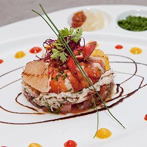

À Naples, une pratique bien connue est au coeur de la philosophie de vie des italiens: le café suspendu. Là bas, lorsqu'on commande un café, on demande un café suspendu en plus. On règle donc 2 cafés mais un seul sera consommé directement. Le second, le café suspendu, va dans un compteur disponible pour les personnes les plus défavorisées qui, lorsqu'elles le souhaitent, peuvent venir au café pour jouir de leur café suspendu gratuitement.
Notre établissement propose le même principe mais pour un menu entier. En effet, dans le prix de notre menu unique est déjà compris le prix du menu suspendu. En vous invitant à notre table vous offrez la possibilité à une personne dans le besoin de jouir d'un repas gratuit digne des plus grands restaurants.
L'efficacité de notre action repose sur la participation de bénévoles en cuisine ainsi que celle de grands Chefs qui créent un menu saisonier spécialement pour les clients du Carousel.
Dans notre établissement le goût de la plus fine cuisine se mêle au plaisir d'aider son prochain.
Le but de notre établissement est de proposer une cuisine goûteuse ainsi qu'un menu gratuit aux personnes dans le besoin grâce à votre générosité et celle de nos bénévoles.
Cliquez pour en savoir plus sur notre initiative.
0
0
0
Menus suspendus distribués.
Grands Chefs à l'origine d'un menu.
Bénévoles passés dans nos cuisine.

Nous vous proposons des menus de saison préparés par des grands Chefs de la gastronomie française spécialement pour Le Carousel. À chaque saison son menu composé de produits actuels et goûteux.
Cliquez pour découvrir notre menu du moment.
C'était super bon comme d'hab. Hâte d'être en été pour le menu spécial kébab ! - Pierre Robin.
Top moumoute ! Je vous ramènerai des stickers Github la prochaine fois pour vous récompenser ! - Yann le Scouarnec.
Aujourd'hui Charlotte Homes aimerait donner accés à la gastronomie française aux plus démunis. Vous aussi vous pouvez faire partie notre équipe de cuisiniers bénévoles et rejoindre un temps la brigade grands chefs.
Devenir chef
Dans une ambiance conviviale vous serez placé sous les ordres du Chef cuisinier du moment.
Vous serez en charge de tous types de travaux en cuisine: mise en place, réception et rangement des provisions, préparer les repas, préparer les garnitures, etc...
Vous êtes professionel de la restauration et souhaitez donner de votre temps pour offrir un repas exceptionnel aux plus démunis ? Rejoignez nous !
Notre Chef du moment, Charlotte Homes, est une passionnée autodidacte. Elle rejoint la brigade du chef cuisinier Alain Passard à L'Arpège à Paris en 2000, puis en 2005, elle ouvre son propre restaurant gastronomique à Paris.
Le menu de la saison est d'ailleurs extrait de sa carte personelle.